I would love to hear from you! Contact me with your questions and comments!
| Name of the Art medium | Picture | Link | |
|---|---|---|---|
| Watercolor | 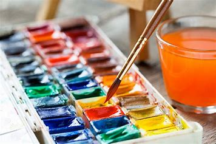 | Click here to learn more about watercolor! | |
| Mixed Media | 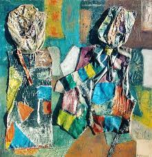 | Click here to learn more about mixed media! | |
| Oil Pastel | 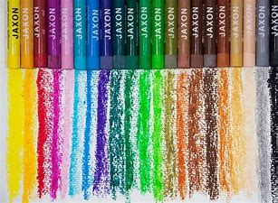 | Click here to learn more about oil pastels! | |
| Acrylic Painting | 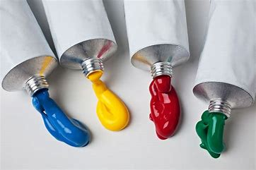 | Click here to learn more about acrylic painting! | |
| Colored Pencils | 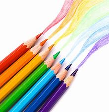 | Click here to learn more about colored pencils! | |
| Crayons | 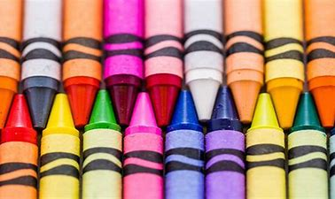 | Click here to learn more about Crayons! | |
| Markers | 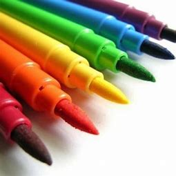 | Click here to learn more about Markers! | |
| Charcoal pencils | 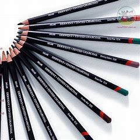 | Click here to learn more about charcoal pencils! | |
| Graphite pencils | 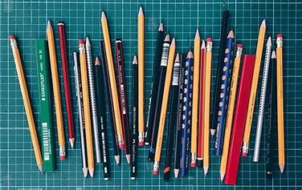 | Click here to learn more about graphite pancils! | |
| Pen and ink | 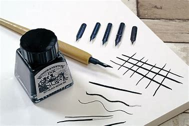 | Click here to learn more about pen and ink! | |
| Chalk pastels/Soft pastels | 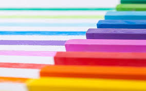 | Click here to learn more about chalk/soft pastels! |